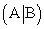
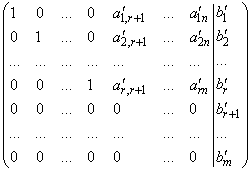
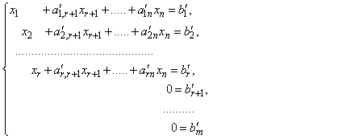
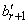
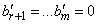
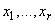
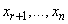
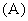
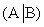

Метод последовательных исключений Жордана-Гаусса
решения систем m линейных уравнений с n неизвестными
Эквивалентные преобразования системы:
- перемена местами двух любых уравнений системы;
- умножение любого уравнения системы на произвольное число
 ;
; - прибавление к одному уравнению системы другого уравнения,
умноженного на произвольное число .
Элементарные преобразования матрицы не изменяют ее ранга.
Элементарным преобразованиям уравнений соответствуют
элементарные преобразования элементов расширенной матрицы системы .
С помощью элементарных преобразований над строками и
перестановкой столбцов расширенная матрица системы может быть приведена к виду
,
и система принимает вид:
.
Если хотя бы одно из чисел ,
…., отлично от нуля, то система
несовместна.
Если , то система
совместна и выражения для базисных неизвестных  через
свободные  очевидны.
Сформулируем алгоритм Жордана-Гаусса как
преобразование строк матрицы к верхнему
треугольному виду, которое позволяет не только вычислить ранги матриц  и ,
но и записать решение системы.